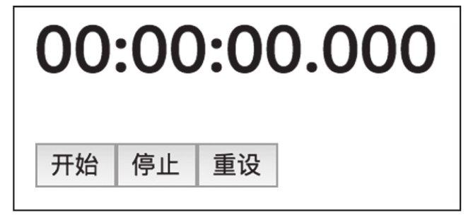

在上一节中，我们完成了RxJS和React的集成，不难发现，用RxJS来管理React的状态有比较固定的模式，就是通过Subject为桥梁来连接RxJS数据流和React组件的状态。让每个组件都重复实现这些模式，无疑是一种浪费，所以，最好有一种方法把这些通用模式提取出来，方便多个组件重复使用，这样可以减少重复代码。
在React中，有一种组件类型之间共享功能的方法叫做“高阶组件”（Higher Order Component，HoC）。在前面5.2节中我们接触过“高阶Observable”，指的是Observable中数据依然是Observable对象；而高阶组件指的是一种函数，这种函数的参数包含某个组件类型，函数的执行结果返回一个全新的组件类型，但是这个新的组件类型具备一些特殊的能力。
接下来，我们就实现一个连接RxJS功能的高阶组件，名为observe，利用这个高阶组件来实现Counter组件，为了体现代码的可复用性，我们还要利用这个observe来实现一个比Counter复杂的新组件类型StopWatch。
1.高阶组件observe
这个高阶组件叫做observe，含义就是让一个React组件“观察”指定的Observable对象，当Observable对象吐出数据时，React组件要做出响应。
在开始写observe之前，我们先确定这个函数的参数，思路如下：
·毫无疑问我们需要一个React组件类作为参数，没有这个参数，这个函数也就不能称为高阶组件了。一个高阶组件可以有多个React组件类参数，在这个例子中只需要一个，习惯上把这个组件类参数叫做WrappedComponent。
·既然和RxJS相关，那就要指定Observable对象，不过，直接要求参数是Observable对象的话，就失去了灵活性。比如，我们希望React组件监听的Observable对象和组件接收到的prop有关系，但是高阶组件作为一个通用函数，并不能预先知道自己被使用创建React组件的时候会接收到什么样的prop，所以，我们要的不是一个Observable对象参数，而是一个能够产生Observable对象的函数，也就是一个工厂函数，我们把这个参数叫做observableFactory。
·observe新产生的组件肯定要包含state，这个state应该能够指定初始值，所以还需要一个defaultState。
好了，我们明确了observe的三个参数，接下来可以考虑如何实现observe。下面是observe这个高阶组件的实现代码。
提示
完整代码可以在本书配套GitHub代码库的chapter-13/react-rxjs/rxjs-hoc目录下找到。
const observe = (WrappedComponent, observableFactory, defaultState) => {
return class extends React.Component {
constructor() {
super(...arguments);
this.props$ = observableFactory(this.props, this.state);
this.state = defaultState;
}
render() {
return <WrappedComponent {...this.props} {...this.state} />
}
componentWillUnmount() {
this.subscription.unsubscribe();
}
componentDidMount() {
this.subscription = this.props$.subscribe(value => this.setState(value));
}
};
};
其中，observe返回了一个全新的React.Component子类，render函数部分很简单，就是把参数WrappedComponent渲染出来，把外部this.props塞给WrappedComponent，同时也把this.state作为prop传给WrappedComponent。
利用observableFactory创建一个Observable对象，为了最大的灵活性，调observableFactory使用this.props和this.state作为参数，这样observableFactory的具体实现可以利用实际使用组件时接收到的prop。
当组件被装载完毕时，会调用componentDidMount函数，这个函数在组件类中属于一种特殊的函数，称为生命周期函数，也就是React在装载或者渲染时会调用的函数，如果组件类型不实现某个生命周期函数，那就会调用React.Component中默认的实现函数，当然，默认的生命周期函数往往不做任何事情。
关于React组件的生命周期函数，可以在React的官方网站上找到介绍，在《深入浅出React和Redux》这本书中也有详细解释，在这里我们不需要花太多篇幅来讲解，读者只要知道，当组件在网页中第一次被渲染的时候，就会调用组件的componentDidMount函数，当组件从网页中删除的时候，会调用组件的componentWillUnmount函数。很明显，这两个生命周期函数分别适合做组件刚刚被渲染的初始化工作和被删除时的清理工作。
在observe这个高阶组件产生的React组件中，componentDidMount订阅了observableFactory产生的Observable对象this.props$，以后只要this.props$吐出任何数据，都会用这个数据去更新当前组件的state，也就是说，this.state中的值会保持永远是this.props$吐出的最后一个数据。
在componentWillUnmount中，则做了退订的动作，这非常有必要，因为从一个通用的函数角度看，我们不知道observableFactory的代码是怎么写的，也不知道它产生的Observable到底占用多少资源，也许observableFactory只是用of产生一个简单Observable对象，那即使不退订也没什么大不了，但是也许observableFactory产生的Observable对象是利用fromEvent从DOM获取事件，这样的Observable对象如果不退订将保留DOM上的事件处理函数，如果没有及时做退订处理，就会造成资源泄露。不管怎样，做了订阅就要做退订处理，这就是有始有终。
在observe产生的React组件类的render函数中，利用ES6的扩展操作符，把this.state传给了参数WrappedComponent，而this.state又是this.props$中的最新数据，所以，要做的就是让observableFactory产生的Observable对象中的数据就是传给WrappedComponent的prop就对了。
上面observe函数的实现其实存在一个问题，就是会让组件渲染两次，除了最初的一次渲染，在componentDidMount被调用时会再次渲染一次，读者可以思考一下如何改进来克服这个问题。
2.用高阶组件实现Counter
现在，我们就利用刚刚实现的observe来实现Counter的功能。
提示
修改之后的Counter的实现，可以在本书配套的GitHub代码库的chapter-13/react-rxjs/rxjs-hoc/Counter.js文件中找到。
和之前一样，傻瓜组件CounterView的部分完全不用修改，要改的是如何把CounterView包装为一个完整功能的Counter。
为了使用observe，我们最主要的工作就是要定义observe的函数参数observableFactory，这个函数参数需要构建一个Observable对象，对Counter而言，我们需要导入一些RxJS的元素，代码如下：
import {BehaviorSubject} from 'rxjs/BehaviorSubject';
import 'rxjs/add/operator/scan';
导入scan很好理解，之前我们用RxJS来管理React的状态就用上了scan，现在用高阶组件来实现，依然需要scan来累积所有的点击事件。
下面是使用observe产生完整Counter功能的代码：
export default observe(
CounterView,
() => {
const counter = new BehaviorSubject(0);
return counter.scan((result, inc) => result + inc, 0)
.map(value => ({
count: value,
onIncrement: () => counter.next(1),
onDecrement: () => counter.next(-1),
}));
},
0
);
在前面的章节我们已经知道，BehaviorSubject可以指定一个“默认数据”，如果不给某个BehaviorSubject塞任何数据，每一个观察者在订阅BehaviorSubject的时候依然可以获得一个数据，这非常适合Counter这个应用的要求，因为计数器需要一个初始默认值为0。
在上面的代码中，counter就是一个BehaviorSubject，onIncrement和onDecrement函数执行时，会给counter传递+1和-1数据，这样，counter就是这个应用中维持计数值状态的实例。
3.用高阶组件实现秒表
为了展示高阶组件observe的可重用性，我们用observe来实现另一个秒表的功能。
一个秒表的最基本功能包括“开始”、“停止”和“重设”，对应三个功能按钮，另外以类似电子表的方式显示时间。当点击“开始”时，秒表开始计时，时间需要实时显示；当点击“停止”时，秒表停止计时，显示的时间停止；当点击“重设”时，时间恢复为0。
提示
秒表的功能在本书配套的GitHub代码库的chapter-13/react-rxjs/rxjs-hoc/src/StopWatch.js文件中可以找到。
其中，显示秒表的React傻瓜组件部分代码如下：
const StopWatchView = ({milliseconds, onStart, onStop, onReset}) => {
return (
<div>
<h1>{ms2Time(milliseconds)}</h1>
<button onClick={onStart}>Start</button>
<button onClick={onStop}>Stop</button>
<button onClick={onReset}>Reset</button>
</div>
);
}
这个组件支持的prop包括毫秒数milliseconds（虽然叫“秒表”，但功能上却是“毫秒表”），还有onStart、onStop和onReset分别代表点击“开始”“停止”“重设”按钮的回调函数。
为了支持毫秒到电子表格式的转换，需要ms2Time函数，代码如下：
const ms2Time = (milliseconds) => {
let ms = parseInt(milliseconds % 1000, 10);
let seconds = parseInt((milliseconds / 1000) % 60, 10);
let minutes = parseInt((milliseconds / (1000 * 60)) % 60, 10);
let hours = parseInt(milliseconds / (1000 * 60 * 60), 10);
return padStart(hours, 2, '0') + ":" + padStart(minutes, 2, '0') + ":" + padStart(seconds, 2, '0') + "." + padStart(ms, 3, '0');
}
在这里，使用了lodash提供的padStart函数，用于填充时、分、秒、毫秒高位的0。
最终，秒表组件如图13-6所示。

图13-6 秒表的初始界面
现在来看秒表的逻辑部分如何实现，三个按钮的点击操作当然可以看作数据流来看待。对于StopWatchView，需要渲染milliseconds属性，而且这个milliseconds的序列也可以看作一个数据流，当点击开始之后，这个数据流应该是持续不断地产生新的数据；当点击停止之后，这个数据流就不应该再产生数据。
observe的第二个参数中使用了RxJS，代码如下：
const START = 'start';
const STOP = 'stop';
const RESET = 'reset';
const StopWatch = observe(
StopWatchView,
() => {
const button = new Subject();
const time$ = button
.switchMap(value => {
switch(value) {
case START: {
return Observable.interval(10).timeInterval()
.scan((result, ti) => result + ti.interval, 0)
}
case STOP: return Observable.empty();
case RESET: return Observable.of(0);
default: return Observable.throw('Invalid value ', value);
}
});
const stopWatch = new BehaviorSubject(0);
return stopWatch
.merge(time$)
.map(value => ({
milliseconds: value,
onStop: () => button.next(STOP),
onStart: () => button.next(START),
onReset: () => button.next(RESET),
}));
},
0
);
其中几个关键对象的含义如下：
·button代表秒表上按钮点击动作的数据流，很自然，我们把传递给傻瓜组件的onStart、onStop和onReset属性设定为向button传送一个对应的数据。
·time$代表秒表当前应该展示的时间，无论哪个按钮被点击，都会打断time$原有的产生数据方式，所以，我们使用switchMap作用于button，在switchMap的函数参数中，根据具体按钮的类型决定time$接下来应该产生什么数据。
当点击“开始”时，我们使用interval配合scan来产生累积递增的毫秒数，精确度是10毫秒而不是1，是因为JavaScript运行环境往往也不会达到毫秒级别的绝对精确。
当点击“停止”按钮时，switchMap会得到一个空Observable对象，虽然这不算是一个有意义的毫秒数，但是，time$会被merge到stopWatch中去，stopWatch是一个BehaviorSubject实例，所以，当time$不产生数据的时候，stopWatch给下游传递的就是它保留的最新数据，这就实现了点击“停止”时让显示时间停止的效果。